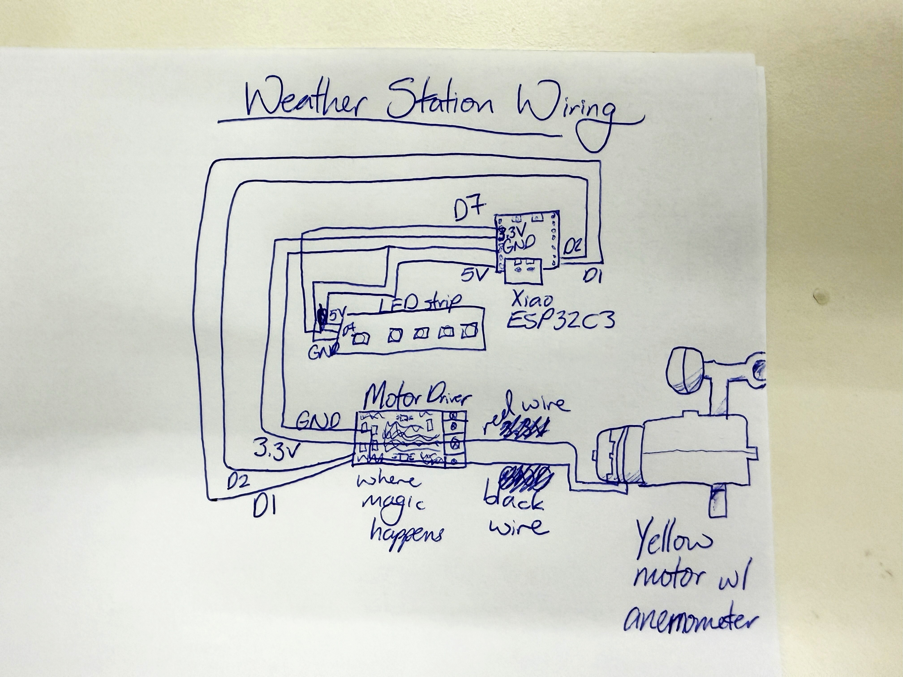

<div class="textcontainer">
<p class="margin"> </p>
<h3>Week 9: Radio, WiFi, Bluetooth (IoT)</h3>
<br>
For this week's assignment, <a href="https://dragoncat5482.github.io/PS70-assignments/" target="_blank"> Alice</a> and I decided to make a mini weather station using temperature forecasts and wind gusts as inputs and an LED strip and yellow motor as outputs.
Alice with her CS powers pulled the wind speed and temperature forecast values from the <a href="https://api.weather.gov/" target="_blank"> National Weather Service API</a>. Wind speeds are given as strings so she had to add in an extra type conversion to pull the numerical value.
I 3D modeled and printed our fake anemometer and integrated the LED strip with different RGB color values representing different temperature ranges (see table below). We made the anemometer activate at wind speeds over 10 mph with increasing velocity through mapping wind speeds to motor speeds.
<br>
<table>
<tr>
<th>Temperature Range</th>
<th>Color</th>
<th>RGB Value</th>
</tr>
<tr>
<td>< 30°F</td>
<td>Purple</td>
<td>rgb(128, 0, 255) <span class="color-box" style="background-color: rgb(128,0,255);"></span></td>
</tr>
<tr>
<td>30–39°F</td>
<td>Blue</td>
<td>rgb(0, 0, 255) <span class="color-box" style="background-color: rgb(0,0,255);"></span></td>
</tr>
<tr>
<td>40–49°F</td>
<td>Light Blue</td>
<td>rgb(0, 191, 255) <span class="color-box" style="background-color: rgb(0,191,255);"></span></td>
</tr>
<tr>
<td>50–59°F</td>
<td>Green</td>
<td>rgb(0, 255, 0) <span class="color-box" style="background-color: rgb(0,255,0);"></span></td>
</tr>
<tr>
<td>60–69°F</td>
<td>Yellow-Green</td>
<td>rgb(128, 255, 0) <span class="color-box" style="background-color: rgb(128,255,0);"></span></td>
</tr>
<tr>
<td>70–79°F</td>
<td>Yellow</td>
<td>rgb(255, 255, 0) <span class="color-box" style="background-color: rgb(255,255,0);"></span></td>
</tr>
<tr>
<td>80–89°F</td>
<td>Orange</td>
<td>rgb(255, 128, 0) <span class="color-box" style="background-color: rgb(255,128,0);"></span></td>
</tr>
<tr>
<td>90–100°F+</td>
<td>Red</td>
<td>rgb(255, 0, 0) <span class="color-box" style="background-color: rgb(255,0,0);"></span></td>
</tr>
</table>
<br><br>
This is the wiring scheme we used.
<br>
<figure>
<p></p>
<figcaption>Wiring diagram of the weather station
</figcaption>
</figure>
<br>
Here is the final product!
<figure>
<img src="./TemperatureLEDs.JPG" alt="LEDs different colors showing they correspond to the temperature" width=30% height=14%>
<img src="./Anemometer.JPG" alt="The anemometer not spinning when the wind is 8 mph" width=30% height=14%>
<figcaption> The temperature LEDs are colored corresponding to the daytime temperature (59, 52, 75, 80, and 73°F respectively) over the next 5 days and the anemometer not spinning when the wind is 8 mph
</figcaption>
</figure>
The motor ended up spinning pretty fast, so we powered it by 3.3V. It was also important to make sure the spinning was the right direction for an anemometer even though it is powered by a motor, not the actual wind.
<br><br>
<figure>
<iframe src="https://drive.google.com/file/d/1OJjzSkZhLXi9xnnbQMt_aVB5cxA89-Ti/preview" width="480" height="360"></iframe>
<figcaption> The anemometer in action spinning
</figcaption>
</figure>
<p class="margin"> </p>
<div class="flexrow">
<a id="btn" href="Anemometer3DFiles.zip" download>Anemometer 3D CAD File
</a>
</div>
<p class="margin"> </p>
<br>
Below is the code we used. Thanks to <a href="https://nathanmelenbrink.github.io/ps70/08_output/index.html" target="_blank"> LED strip documentation</a> on the PS70 website.
<pre>
<code>
#include < Adafruit_NeoPixel.h >
#include < WiFi.h >
#include < HTTPClient.h >
#include < ArduinoJson.h >
// Pin for LED strip
#define PIN D7
#define NUMPIXELS 5
#define DELAYVAL 500 // Time (in milliseconds) to pause between pixels
#define APIWAIT 60000
// Setup for API connection
const char* ssid = "MAKERSPACE";
const char* password = "12345678";
// This latitude and longitude is for the Science Center
const String pointsEndpoint = "https://api.weather.gov/points/42.3764,-71.1174";
String forecastEndpoint;
const int maxWindSpeed = 30;
int lastRequestTime = 0;
// Motor control pins
int A1B = D1;
int A1A = D2;
// setting PWM properties
const int freq = 5000;
const int resolution = 8;
Adafruit_NeoPixel strip(NUMPIXELS, PIN, NEO_GRB + NEO_KHZ800);
// Storage for current period values
int temperature;
int probPrecipitation;
int relativeHumidity;
String windSpeedStr;
// Speed in mph
int windSpeed;
String windDirection;
int red;
int green;
int blue;
int temps[5];
void setup() {
// Initialize motor pins and turn off motor
pinMode(A1A, OUTPUT);
pinMode(A1B, OUTPUT);
ledcAttach(A1A, freq, resolution);
ledcWrite(A1A, 0);
digitalWrite(A1B, LOW);
// -------------------------------------------------------------------
strip.begin(); // INITIALIZE NeoPixel strip object (REQUIRED)
strip.show(); // Turn OFF all pixels ASAP
strip.setBrightness(10); // Set BRIGHTNESS low to reduce draw (max = 255)
// ------------------------------------------------------------------
// API setup
Serial.begin(115200);
WiFi.begin(ssid, password);
while (WiFi.status() != WL_CONNECTED) {
delay(1000);
Serial.println("Connecting to WiFi..");
}
Serial.println("Connected to the WiFi network");
// Get the endpoint for the hourly forecast first
HTTPClient http;
http.begin(pointsEndpoint); //Specify URL to get information about a latitude and longitude
int httpCode = http.GET(); // Make the request
if (httpCode > 0) { //Check for the returning code
String payload = http.getString();
// Serial.println(httpCode);
// Serial.println(payload);
// Turn json string into a dictionary to access elements
JsonDocument doc;
deserializeJson(doc, payload);
// Get the endpoint for the hourly forecast that we will use later
forecastEndpoint = String(doc["properties"]["forecast"]);
}
else {
Serial.println("Error on HTTP request");
}
http.end(); //Free the resources
}
void getTempColor(int temp, int &r, int &g, int &b) {
if (temp < 30) { // purple
r = 128; g = 0; b = 255;
} else if (temp < 40) { // blue
r = 0; g = 0; b = 255;
} else if (temp < 50) { // light blue
r = 0; g = 191; b = 255;
} else if (temp < 60) { // green
r = 0; g = 255; b = 0;
} else if (temp < 70) { // yellow-green
r = 128; g = 255; b = 0;
} else if (temp < 80) { // yellow
r = 255; g = 255; b = 0;
} else if (temp < 90) { // orange
r = 255; g = 128; b = 0;
} else { // red
r = 255; g = 0; b = 0;
}
}
void loop() {
JsonDocument doc;
// If it is time to make a new request and update variables, do so
if (((lastRequestTime == 0) || (millis() - lastRequestTime > APIWAIT)) && (WiFi.status() == WL_CONNECTED)) { //Check the current connection status
HTTPClient http;
http.begin(forecastEndpoint); //Specify the URL for the hourly address
int httpCode = http.GET(); //Make the request
if (httpCode > 0) { //Check for the returning code
String payload = http.getString();
// Serial.println(httpCode);
// Serial.println(payload);
// Deserialize json
deserializeJson(doc, payload);
lastRequestTime = millis();
// Extract current period values
// Get current period values
temperature = doc["properties"]["periods"][0]["temperature"];
probPrecipitation = doc["properties"]["periods"][0]["probabilityOfPrecipitation"]["value"];
relativeHumidity = doc["properties"]["periods"][0]["relativeHumidity"]["value"];
windSpeedStr = String(doc["properties"]["periods"][0]["windSpeed"]);
temps[0] = doc["properties"]["periods"][1]["temperature"];
temps[1] = doc["properties"]["periods"][3]["temperature"];
temps[2] = doc["properties"]["periods"][5]["temperature"];
temps[3] = doc["properties"]["periods"][7]["temperature"];
temps[4] = doc["properties"]["periods"][9]["temperature"];
// Serial.println(relativeHumidity);
// Speed in mph
// Serial.println(windSpeedStr);
windSpeed = windSpeedStr.toInt();
// Cap the windspeed for conversion purposes
if (windSpeed > maxWindSpeed) {
windSpeed = maxWindSpeed;
}
// Serial.println(windSpeed);
windDirection = String(doc["properties"]["periods"][0]["windDirection"]);
}
else {
Serial.println("Error on HTTP request");
}
http.end(); //Free the resources
}
// --------------------------------------------------------------------
// Turn motor
int motorSpeed = map(windSpeed, 0, maxWindSpeed, 0, 255);
// Serial.println(windSpeed);
Serial.println(motorSpeed);
// if motorspeed is too low just don't turn the motor at all
if (motorSpeed < 90){
motorSpeed = 0;
}
ledcWrite(A1A, motorSpeed);
digitalWrite(A1B, LOW);
// --------------------------------------------------------------
// Control light strip
strip.clear(); // Set all pixel colors to 'off'
// The first NeoPixel in a strand is #0, second is 1, all the way up
// to the count of pixels minus one.
for(int i=0; i < NUMPIXELS; i++) { // For each pixel...
getTempColor(temps[i], red, green, blue);
strip.setPixelColor(i, strip.Color(red, green, blue));
// strip.Color() takes RGB values, from 0,0,0 up to 255,255,255
// Here we're using a moderately bright green color:
strip.show(); // Send the updated pixel colors to the hardware.
// delay(DELAYVAL); // Pause before next pass through loop
}
}
</code>
</pre>
</div>